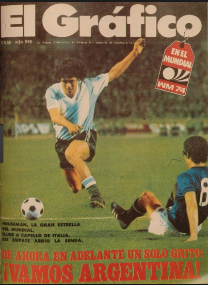

What is ATM?
ATM stands for Applied Technology Magnet and is a 3 year computer program at Bancroft Middle School. In ATM, students are introduced to different programs on the computer and get to learn and explore them.
In 6th grade, I was introduced to the basics of computer programs, i learned how to type and to be safe on the web
In 7th grade, I learned graphics and computer aided drafting. I had so much fun on this magazine as you can see i did on soccer.

In 8th grade, I learned how to code, as you can see in the picture that what i coded to do this website and that's just a bit of my code i have way more code then the one i have in the picture.